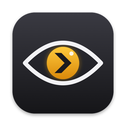

Plex PeekA tiny Mac app that shows every active stream on your Plex Media Server: who's watching, what, on which device, and how hard it's working your server.
The menu bar icon lights up and shows how many people are watching. Nothing playing, nothing shown.
Poster, title, user, device and progress for every movie, episode and track playing right now.
Direct Play or Transcode, resolution, LAN or WAN, and per-stream and total bandwidth.
End any stream with one click and send the viewer a message explaining why.
Uses Plex's own sign-in in your browser. Your token stays in the macOS Keychain.
No Dock icon. Auto-closes when you move away, launches at login, and handles multiple servers.
Plex Peek.zip from the Releases page and unzip it.Menu bar icon hidden behind the notch? Open Plex Peek again from Applications and the dropdown appears on its own.
Needs Xcode or the Swift 5.10+ toolchain.
git clone https://github.com/<you>/PlexPeek.git
cd PlexPeek
./build.sh
open "build/Plex Peek.app"